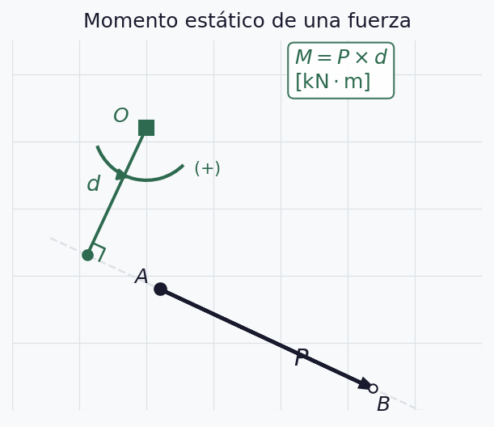
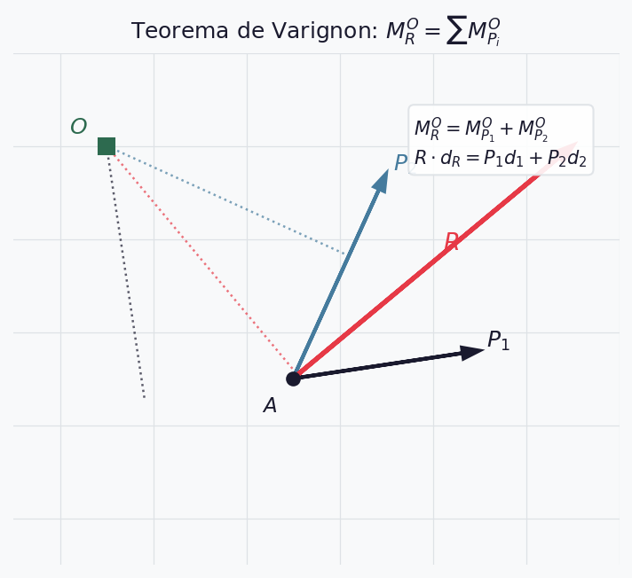
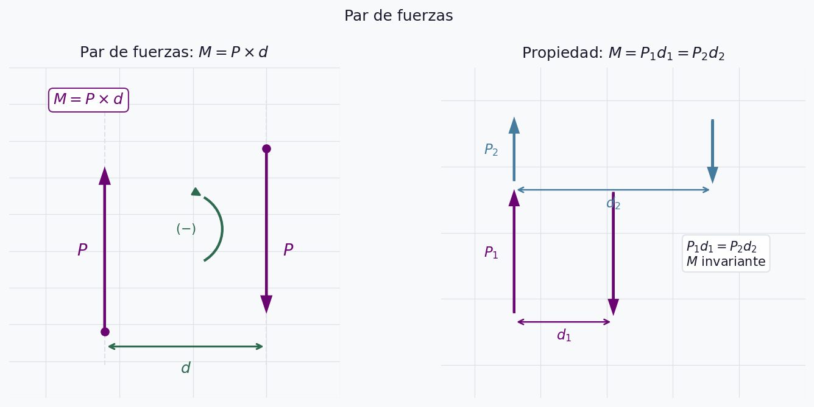
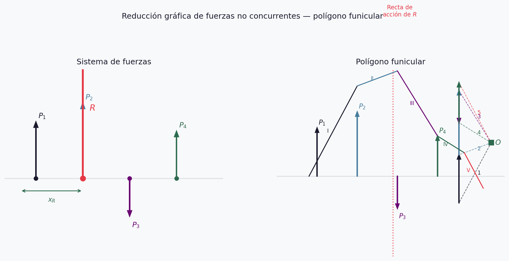
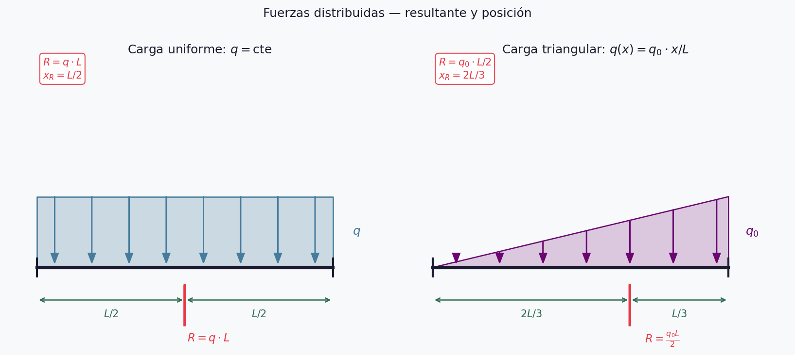

Fuerzas No Concurrentes en el Plano
UT1 — Semana 2
2026-04-13
Repaso Semana 1
- Fuerzas concurrentes: 4 características, argumento \(\varphi\)
- Componentes: \(P_x = P\cos\varphi\), \(P_y = P\sin\varphi\)
- Composición analítica: \(R_x = \sum P_i\cos\varphi_i\), \(R_y = \sum P_i\sin\varphi_i\)
- Descomposición: cartesiana y oblicua (regla del seno)
- Equilibrio: \(\sum P_x = 0\), \(\sum P_y = 0\)
¿Qué cambia hoy?
Para fuerzas concurrentes: la resultante pasa por el punto de concurrencia → 2 ecuaciones alcanzan.
Para fuerzas no concurrentes: la recta de acción de la resultante es desconocida → necesitamos 3 ecuaciones.
\[R_x = \sum P_i\cos\varphi_i \qquad R_y = \sum P_i\sin\varphi_i \qquad M_R^O = \sum M_i^O\]
Momento estático — definición
\[\boxed{M = P \times d} \quad [\text{kN·m}]\]
- \(d\): distancia perpendicular entre \(O\) y la recta de acción
- Positivo si gira en sentido antihorario \((+\circlearrowleft)\)
Momento estático — diagrama

Momento estático — expresión analítica
Dada la fuerza \(P\) aplicada en \((x_i,\,y_i)\) y centro de momentos \(O = (x_O,\,y_O)\):
\[M^O = P_x \cdot |y_O - y_i| - P_y \cdot |x_O - x_i|\]
Ejemplo: \(P = 600\,\text{kN}\) a \(\varphi = 40°\), \(A = (2{,}0;\;1{,}0)\), \(O = (0;\;0)\)
\[P_x = 459{,}6\,\text{kN} \qquad P_y = 385{,}7\,\text{kN}\]
\[M^O = 459{,}6 \times 1{,}0 - 385{,}7 \times 2{,}0 = -311{,}8\,\text{kN·m}\]
Teorema de Varignon
El momento de la resultante respecto a un punto es igual a la suma algebraica de los momentos de las componentes.
\[M_R^O = \sum M_{P_i}^O \qquad R \cdot d_R = P_1 d_1 + P_2 d_2\]
Teorema de Varignon — diagrama

Par de fuerzas — definición
Dos fuerzas de igual intensidad, sentidos contrarios y rectas de acción paralelas:
\[M_{par} = P \times d\]
La resultante de un par es nula → no produce traslación, solo rotación.
Par de fuerzas — propiedades
- Es libre: puede trasladarse y girar en el plano manteniendo \(M\)
- \(M = P_1 d_1 = P_2 d_2\) — el momento es invariante
- Para sumar pares: \(M_R = \sum M_i\)
- Dos pares son iguales si tienen igual momento
Par de fuerzas — diagrama

Traslación de fuerzas
Para trasladar \(P\) de \(A\) a \(B\) (cambia su recta de acción):
- Agregar en \(B\) un sistema nulo: \(P'\) y \(-P'\) paralelas a \(P\)
- \(P\) en \(A\) y \(-P'\) en \(B\) forman un par \(M = P \cdot d\)
- Sistema equivalente: \(P'\) en \(B\) + par \(M\)
\[\boxed{d = \frac{M}{P}}\]
Traslación de fuerzas — diagrama

Reducción no concurrente — método analítico (1/3)
a) Dos proyecciones + un momento (más usada)
\[R_x = \sum P_i\cos\varphi_i \qquad R_y = \sum P_i\sin\varphi_i\]
\[M_R^O = \sum M_i^O\]
La tercera ecuación fija un punto de la recta de acción de \(R\):
\[x_R = \frac{M_R^O}{R_y} \quad \text{(si } R_y \neq 0\text{)} \qquad y_R = \frac{M_R^O}{R_x} \quad \text{(si } R_x \neq 0\text{)}\]
Reducción no concurrente — método analítico (2/3)
b) Una proyección + dos momentos
\[R_x = \sum P_i\cos\varphi_i\]
\[M_R^O = \sum M_i^O \qquad M_R^N = \sum M_i^N\]
Advertencia
Los centros \(O\) y \(N\) no pueden estar sobre una recta perpendicular al eje de proyección elegido.
Reducción no concurrente — método analítico (3/3)
c) Tres momentos respecto a tres puntos no alineados
\[M_R^O = \sum M_i^O \qquad M_R^N = \sum M_i^N \qquad M_R^S = \sum M_i^S\]
Advertencia
Los puntos \(O\), \(N\) y \(S\) no deben estar alineados.
Los tres métodos son equivalentes. En la práctica se usa a) por ser el más directo.
Ejemplo — composición no concurrente
Dos fuerzas sobre una viga de \(4\,\text{m}\):
- \(P_1 = 400\,\text{kN}\) ↑ en \(x = 0\)
- \(P_2 = 300\,\text{kN}\) ↑ en \(x = 4\,\text{m}\)
Paso 1 — resultante: \[R = 400 + 300 = 700\,\text{kN} \uparrow \qquad \varphi_R = 90°\]
Paso 2 — recta de acción (momento respecto a \(O = (0;\;0)\)): \[M_R^O = 400 \times 0 + 300 \times 4 = 1200\,\text{kN·m}\] \[x_R = \frac{1200}{700} = 1{,}71\,\text{m}\]
Polígono funicular — construcción (1/2)
Para fuerzas no concurrentes, el polígono de fuerzas da módulo y dirección de \(R\) pero no su recta de acción. El polígono funicular la ubica.
Pasos:
- Trazar el polígono de fuerzas con escala \(EF\)
- Elegir un polo \(O\) arbitrario
- Trazar los rayos polares de \(O\) a cada vértice del polígono
Polígono funicular — construcción (2/2)
- Trazar los lados del funicular paralelos a cada rayo polar, comenzando por un punto arbitrario sobre \(P_1\)
- Cada lado se extiende hasta la recta de acción de la fuerza siguiente
- Prolongar el primer y último lado hasta que se corten
- Por ese punto pasa la recta de acción de \(R\)
Polígono funicular — diagrama

Casos del polígono funicular
| Polígono de fuerzas | 1° y último lado del funicular | Resultado |
|---|---|---|
| Abierto | Se cortan en un punto | Resultante única |
| Cerrado | Paralelos | Sistema reduce a un par |
| Cerrado | Coinciden | Equilibrio |
Fuerzas paralelas
Caso particular de no concurrentes: todas las rectas de acción son paralelas.
\[R = \sum P_i \qquad x_R = \frac{\sum P_i \cdot x_i}{R}\]
Ejemplo: \(P_1 = 200\,\text{kN}\) en \(x=0\); \(P_2 = 350\,\text{kN}\) en \(x=3\,\text{m}\); \(P_3 = 150\,\text{kN}\) en \(x=7\,\text{m}\)
\[R = 700\,\text{kN} \qquad x_R = \frac{0 + 1050 + 1050}{700} = 3{,}0\,\text{m}\]
Fuerzas distribuidas — concepto
Una carga distribuida \(q(x)\) [] se reemplaza por su resultante puntual:
\[R = \int_0^L q(x)\,dx \qquad x_R = \frac{\int_0^L x\,q(x)\,dx}{R}\]
Carga uniforme
\[q(x) = q = \text{cte}\]
\[R = q \cdot L \qquad x_R = \frac{L}{2}\]
La resultante actúa en el centro del tramo.
Carga triangular
\[q(x) = q_0 \cdot \frac{x}{L}\]
\[R = \frac{q_0 \cdot L}{2} \qquad x_R = \frac{2L}{3}\]
La resultante actúa a dos tercios del extremo de menor carga.
Fuerzas distribuidas — diagrama

Equilibrio — condición analítica (1/2)
a) Dos proyecciones + un momento:
\[\sum P_i\cos\varphi_i = 0 \qquad \sum P_i\sin\varphi_i = 0 \qquad \sum M_i^O = 0\]
b) Una proyección + dos momentos:
\[\sum P_i\cos\varphi_i = 0 \qquad \sum M_i^O = 0 \qquad \sum M_i^N = 0\]
Equilibrio — condición analítica (2/2)
c) Tres momentos respecto a puntos no alineados:
\[\sum M_i^O = 0 \qquad \sum M_i^N = 0 \qquad \sum M_i^S = 0\]
Advertencia
En todos los casos, los centros de momentos no deben estar alineados entre sí ni con la dirección de las fuerzas.
Práctica — Parte 1 (25 min)
Problema 1 ★☆☆
\(P = 550\,\text{kN}\) a \(\varphi = 35°\), aplicada en \(A = (2{,}0;\;1{,}5)\,\text{m}\).
- Calcular \(M\) respecto a \(O_1 = (0;\;0)\) y \(O_2 = (5{,}0;\;3{,}0)\,\text{m}\)
- Verificar por Varignon en ambos casos
Problema 2 ★★☆
Tres fuerzas verticales sobre una viga: \(P_1 = 180\,\text{kN}\) en \(x=0\); \(P_2 = 260\,\text{kN}\) en \(x=3\,\text{m}\); \(P_3 = 140\,\text{kN}\) en \(x=7\,\text{m}\)
Determinar resultante y posición de su recta de acción.
Práctica — Parte 2 (25 min)
Problema 3 ★★☆
Viga de \(8\,\text{m}\): carga uniforme \(q = 25\,\text{kN/m}\) en los primeros \(5\,\text{m}\) y carga triangular \(q_0 = 40\,\text{kN/m}\) en los \(3\,\text{m}\) restantes.
Calcular resultante total y posición.
Problema 4 ★★★
Cuatro fuerzas sobre una placa: \(P_1 = 300\,\text{kN}\) a \(0°\) en \((0;\;2{,}0)\); \(P_2 = 400\,\text{kN}\) a \(90°\) en \((3{,}0;\;0)\); \(P_3 = 300\,\text{kN}\) a \(180°\) en \((6{,}0;\;2{,}0)\); \(P_4 = 400\,\text{kN}\) a \(270°\) en \((3{,}0;\;4{,}0)\)
¿El sistema está en equilibrio? Verificar por los tres métodos.
Solución — Parte 1
Problema 1: \[P_x = 450{,}4\,\text{kN} \qquad P_y = 315{,}4\,\text{kN}\] \[M^{O_1} = 450{,}4 \times 1{,}5 - 315{,}4 \times 2{,}0 = +44{,}8\,\text{kN·m}\] \[M^{O_2} = 450{,}4 \times |3{,}0-1{,}5| - 315{,}4 \times |5{,}0-2{,}0| = -270{,}6\,\text{kN·m}\]
Problema 2: \[R = 580\,\text{kN} \uparrow \qquad x_R = \frac{0 + 780 + 980}{580} = 3{,}03\,\text{m}\]
Solución — Parte 2
Problema 3:
\(R_1 = 25 \times 5 = 125\,\text{kN}\) en \(x_1 = 2{,}5\,\text{m}\)
\(R_2 = \frac{40 \times 3}{2} = 60\,\text{kN}\) en \(x_2 = 5 + \frac{2 \times 3}{3} = 7{,}0\,\text{m}\)
\[R = 185\,\text{kN} \qquad x_R = \frac{125 \times 2{,}5 + 60 \times 7{,}0}{185} = 3{,}96\,\text{m}\]
Problema 4: \[R_x = 300 - 300 = 0 \qquad R_y = 400 - 400 = 0\] \[M^O = 300\times2 - 400\times3 - 300\times2 + 400\times3 = 0\]
Sistema en equilibrio ✓
Síntesis
- Para no concurrentes se necesitan 3 ecuaciones — la tercera ubica la recta de acción de \(R\)
- Varignon: \(M_R^O = \sum M_i^O\) — simplifica el cálculo del brazo
- El par produce solo rotación; es libre en el plano
- El polígono funicular ubica gráficamente la recta de acción
- Cargas distribuidas: uniforme → \(x_R = L/2\); triangular → \(x_R = 2L/3\)
- Equilibrio: \(\sum P_x = 0\), \(\sum P_y = 0\), \(\sum M^O = 0\)
Para el hogar
| # | Consigna | Nivel |
|---|---|---|
| 1 | Momento de 3 fuerzas respecto a 2 centros, verificar por Varignon | ★☆☆ |
| 2 | Componer 4 fuerzas no concurrentes: resultante y recta de acción | ★★☆ |
| 3 | Viga con carga mixta: resultante y posición | ★★☆ |
| 4 | Sistema de fuerzas: determinar si reduce a resultante, par o equilibrio | ★★★ |
Estabilidad / Estática y Resistencia · UT1 · Semana 2